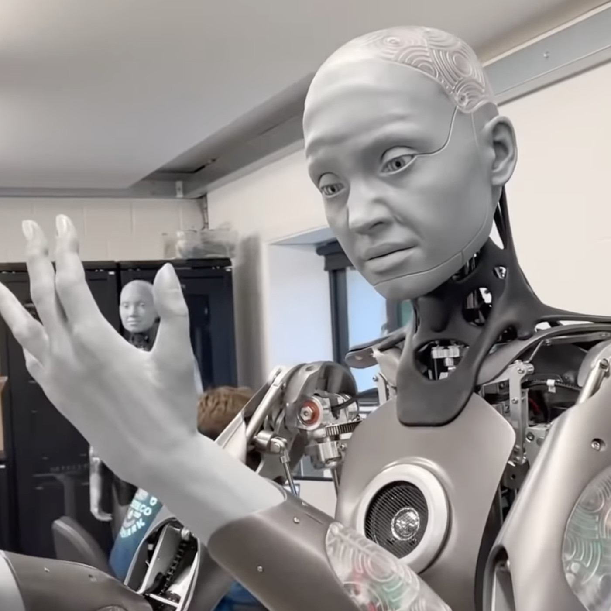

Welcome To Our Team Profile!

Group 27 Thursday
Yifan Shen

Hi, my name is Yifan Shen, Yvon is my English name. I am from Shanghai, an international metropolis located in the middle of the eastern coastline of China. Chinese is my native language. I have been in Melbourne for about three years. Throughout high school, because of my strong interest in IT, I have studied Applied Computing and Software Development. Computers have always given me a platform to demonstrate my creativity and increase my general knowledge. For my previous coursework, I designed a project plan which related to the COVID-19 drone monitoring in Applied Computing and made a program which I called it for "Filter Bubble" in Software Development. This gave me a great number of experiences in IT. In my spare time, I sometimes create some small programs, testing out new functions or combining old features which provides me a good opportunity to see my progress as a software developer. The major for further education that I pursue here in RMIT is Information Technology. In my leisure time, I have a great number of hobbies. Playing the piano can be one of them. Doing sports is also an integral part of my life. In my spare time, I love road-bike cycling. During the ride, I can not only relax my mind, exercise my body, but also enjoy the beautiful scenery along the way. I also enjoy playing tennis, basketball and badminton. Collecting things is also one of my favourite hobbies, ranging from sneakers, Pokémon cards, coins, stamps, etc. My most-liked thing to do on vocations is to travel. It is undoubtedly a fantastic thing to go and see where you want to go, photographing and discover the beauty of the earth. The place I most look forward to is Antarctica. For photography, for adventure, for icebergs, for wildlife, for another world…
Roy Loh

Greetings, my name is Roy Loh. I am a Malaysian Chinese international student studying information technology in RMIT university. I completed my WACE exams in 2020 but took a gap year due to Covid. I can speak English and mandarin. I enjoy watching videos on computer setups I cannot afford on the internet and anime in my free time. I work casually as a coffee barista at a hotel. As an international student in Melbourne, I find it quite challenging due to it being a new environment, however I am slowly getting used to the culture here. I dream to earn enough money so I can travel around the world. I aspire to work in the technology industry in the future and I hope to learn useful skills such as programming and broaden my knowledge regarding the world of tech.
Michael Khalil
Hello I'm Michael Khalil, I'm currently 18 years of age as of 2022 and just finished highschool last year completing VCE. As of this year I am currently enrolled at RMIT Melbourne studying my first year for my Bachelor of Information technology degree. I was born here in Australia but both sides of my family came from Egypt, with both my parents moving from Egypt to Melbourne as migrants. Because of my constant exposure to Egyptian culture and the Arabic language, I understand spoken Arabic vaguely (but cant read it!) and can barely speak it. Through primary and high school I also know basic Italian. My hobbies and interests include, Video Games, computer hardware, IT as a whole, japanese cars and modifying them, as well as motorsports in general (especially Formula 1!), and even a bit of anime.
Yao Lin
Hi, I am Yao Lin, I come from China. This is my second semester of Information Technology, very passionate about technology, and always curious about how technology works. I like to spend some time exploring various programming topics and new tech when I am free, other than that I love sports, my favourite sports are swimming and table tennis.
Jin Guo
Hello I’m Jin Guo, Andy is my English name. I'm currently 18 years old and just finished year 12 last year, and currently studying at Rmit Bachelor of IT. I was born and raised in tonga, an island located to the east side of Australia, close to New zealand. Tonga is a beautiful island surrounded with white beaches and coral reefs and covered with tropical rainforests. Although I was born in tonga, both my parents are chinese therefore I am from the nationality of China. The language that we speak at home is Mandarin no matter whether our family is in Tonga or Australia. My hobbies and interests are actually playing basketball and watching the nba, video games and sneakers.
Taha Elsukkari

I am Taha! I was born in Australia during late 2003. My parents on the other hand are both from Lebanon, a small country off the coast of the Mediterranean Sea. I can speak English and a fair amount of Arabic. For fun I mostly go out with my friends or play games for fun such as valorant or elden ring.I enjoy watching motorsports such as formula 1. I graduated from Minaret College in 2021, so I am currently in my first year of Bachelor of IT.
Group Processes
write something soon
Career plans
write something soon
Project description
Overview
Detailed description
Aims
Our concept is a smartphone application that functions as a virtual wallet, serving as a central location for all types of virtual cards, QR codes, and virtual tickets. As there are many different types of services that can store credit cards (e.g., apple pay and google play), and some less popular virtual cards and/or QR Codes used in other non wallet apps may require a different application or may not even be obtainable on a virtual wallet service, a user may need various applications and accounts to use any of their virtual cards on their phone. Our aim is to provide a functioning mobile application that integrates the use of near field communication (NFC) with Card / QR storage in order to essentially provide users with a unified “eWallet” making a card holder’s life easier and more efficient when dealing with scannable items on their phone, with the use of this application, our biggest target to achieve would be to create a functioning ewallet that allows for a convenient and straightforward experience for all users. A goal that will assist us in achieving our aim would be for large institutions and banks to combine their cards with our application, this could mean that banking customers would no longer require physical cards but instead their bank cards would be immediately incorporated into our application, This is also true for any card producer such as ptv, arcades, universities, gyms etc. This feature, if achieved, could contribute greatly to adding more convenience for the users, thus allowing us to further our progression towards our aim. Another goal that can help the team in achieving our aims is for system wide integration of our Application within a tech company with influence, such as Apple or Android. With the addition of our application with their operating systems, these companies can soar our teams efforts in broadening The user base of our application. With the introduction of an increase in users utilizing the ewallet, More user feedback can be received which will allow for more accurate changes to be made to better Suit the users needs and requirements, more features will be able to be added as well as user requests Would flood in. this will not only allow for a more widespread deployment of our app, But also allows for us to partner with those corporations and continue developing the software and hardware to allow for a greater user experience whilst using our app.Plans and progress
Roles
Scope and limits
Sources: 1 2 3 4 5 6 7 8 9 10 11 12
Cloud

Cloud services are web based platforms, software and infrastructure that are hosted by third party
providers such as Azure cloud or AWS, and made available to be used throughout the internet by
individuals, businesses and organisations.
Cloud computing enables businesses and individuals to consume resources online, such as databases,
storage, memory, data transfer, virtual machines and pay-as-you-go.
Cloud computing is a major improvement over traditional computing. Unlike traditional computing
where regular maintenance is needed which will result in IT labour costs, cloud service providers
will provide maintainability and automatic updates to new databases, OS and softwares, to ensure
everything is up to date.
Cloud service providers will also ensure data is secured. This allows businesses to cut operational
costs, such as less hardware, databases, software licences and servers.
Cloud computing models also improve upon older ones, for example a pay-as-you-go model charges for
resources as they are being used. Monthly usage is tracked, and the user only has to pay for used
resources.
Cloud computing is scalable and reliable. There is an unlimited number of resources that can be
utilised by users. Processing of resources increases based on users' needs, the user can always
scale down if resources are not needed.
Cloud services are also managed by service providers meaning that it can be accessed 24/7, therefore
the business and organisation does not have to worry about maintaining the servers, thus cutting
costs of labour to maintain their hardware.
Cloud service providers have multiple data centres located throughout the world, which make them
faster and more reliable. AWS is currently leading the world with the largest global footprint, with
86 availability zones throughout 26 regions.
Cloud computing can be divided into three major categories, Infrastructure as a service(Iaas),
platform as a service(Paas) and software as a service(Saas). Majority of the top cloud service
providers provide all these 3 services. An entire IT computing infrastructure is offered by Iaas,
which will be provisioned and managed over the internet. The key components of Iaas are used to
replace existing development and test environments, virtual machines, website hosting, storage,
networking, servers, backup, applications and data, middleware and high performance computing. Paas
provides a full development and deployment environment in the cloud, which includes debugging,
deployment tools and services, testing and dev. Saas is when someone else develops and hosts a
software, and this software is later used by businesses or individuals when they need to do so.
Future of cloud:
Increase storage capacity - With the high volume of incoming data, it will be difficult for
businesses to store data securely. Therefore the demand for cloud computing will be increasing
drastically with many businesses adopting cloud computing. Cloud service providers will compete
among one another to provide larger data centres at lower prices, and companies will be able to
store large amounts of data securely.
Increased security - Data stored in the cloud is secure, but not entirely. Some companies which
provide cloud services take security for granted. Large amounts of data often attract cyber
criminals, therefore in the future, cloud service providers are likely to provide better security
measures to prevent cyberattacks.
Modular software will be a priority - Programs are becoming increasingly complex, and the size of
programs are also bigger than before, therefore advanced system thinking will soon be needed in
cloud technology. We can see software being developed in various angles because in the future,
applications will be stored not only in the cloud but in other places as well. The application will
be stored on different modules of the servers located on different clouds. Service companies are
currently using various types of software which have yet to be modified, which leads to the fact
that modified software which is required in cloud computing tol provide better and improved security
and facilities. This software will be more user friendly and flexible towards end users. This
software will be advantageous towards the company as it will be both cost and time efficient.
Over the years, cloud computing has moved from an innovative concept to a booming industry. In 1969,
a computer scientist named J.C.R. Licklider proposed a concept of interconnected computer systems of
computers, which was later developed into the Advanced Research Projects Agency Network(ARPANET), a
predecessor of the internet. ARPANET was the first network that enabled the sharing of digital data
between computers remotely. During the following decades, many advancements happened such as IBM’s
virtual machine operating system, which enables the creation of a computer virtually, which can then
be operated like a real computer physically. Other popular hardware virtualization platforms
included tools like Vagrant and parallels for Mac would appear along the way, and eventually virtual
private networks would be created for business purposes leading to the development of modern cloud
computing infrastructure. Salesforce became the first company that offered software-as-a-service,
and thus the era of cloud computing was born.
Cloud has provided new ways of accessing data cost efficiently and quickly, and allowed companies to
boost innovation and leverage new technologies as they are invented and modified. Cloud has
redefined how technology is embedded in everything we do, and changed the way it is built and
delivered. However, the rise of cloud has also brought multiple social concerns, including:
Ethics in cloud - Data is essential for business decisions, however there are ethical concerns
surrounding consumer data stored in cloud repositories that are being analysed by service providers.
There are inevitable privacy and security concerns regarding how the data is used, especially when
there is a desire to provide customised services. When a machine learning model makes a decision,
they might reflect and even exaggerate biases of the developers of the system, causing negative
consequences to affected consumers.
Digital divide - A gap will be formed between those with access and those without access to
technology, the concept of a digital divide was first formed when the iPhone penetrated into the
smartphone market, and as the years passed, technology continued to grow and evolve while leaving
those without skills behind. As cloud based technologies continue to improve and grow, workers in
the ever growing IT industry are required to learn new skills or learn new roles. Business
organisations are required to provide proper training programs to reskill workers. Google and Amazon
provide certificates for people to broaden their skills to take a step closer into becoming a cloud
practitioner.
Uneven playing field - The increase in cloud computing has lowered barriers of entry for businesses
and allowed efficiency and lower cost benefits. However, with the growth of large cloud companies
such as AWS, Google and Azure, companies may need to consider non-traditional ecosystem
relationships. These large cloud companies have the most data and resources, their growth will cause
them to continue dominating the market, and eventually the question will arise whether cloud-enabled
technologies will be a democratising force or will create an oligopolistic or monopolistic society.
Opportunities
Due to the increase in demand for cloud computing, the global cloud computing market is likely to
surpass $1 trillion by 2024. The revenue of Amazon web services(AWS), the largest cloud service
provider alone, expanded from 44 billion US dollars in 2020, and is expected to reach 62 billion US
dollars the following year. AWS has also announced nine more availability zones and three more
regions. This creates more job opportunities for cloud engineers and cloud architects who are
responsible for designing and maintaining the cloud architecture and solutions architects who are
responsible for aiding customers in implementing cloud technologies in their businesses. Companies
like AWS and Google provide certificates, which is a more cost efficient alternative compared to a
degree which requires a lot more time and money.
The evolution of cloud computing is beneficial towards me in my daily life. As a student, I need to
store many files and documents. Therefore the use of cloud is beneficial as it is cost efficient.
Purchasing physical storage on a laptop is expensive for many students, therefore I think the use of
cloud storage is beneficial and cost efficient for us. The use of cloud in shopping websites is
convenient for me, for example there is a ‘recently used’ option, which is a direct result from
cloud services. As a broke indecisive student, this is very convenient for me to keep track and
compare multiple products across websites. Even the use of navigation apps cause me to indirectly
use cloud, as navigation apps like google maps use cloud navigation to ensure the maps and direction
displayed are up to date via a network connection. This is especially helpful towards an
international student like myself in melbourne as I still get lost navigating through the city.
Online cloud based software such as Microsoft Teams, which is currently being used by my group mates
and I to communicate for team meetings, or even discord, which is used by my friends and I to
communicate with each other when playing games. Without these cloud based applications, I would be
unable to communicate with my friends for my assignments and when playing games. Social media apps
like facebook and instagram also utilise cloud to store pictures and data. Social media is a big
part of my everyday life, and of many others too I’m sure. All this is possible due to the usage of
cloud computing. However, for the older members of my family and of many others, they are unlikely
to transition to using cloud technologies for storage purposes, due to their lack of knowledge and
unwillingness to transition from something they’re comfortable with.
Sources:
1
2
3
4
5
6
Robots

Robots are machines that are programmed by computers to perform a series of actions automatically.
It can replicate a human being and is able to mimic human movement and functions automatically. But
cannot think and have emotions like us, humans, as of now. This is likely to be a function in the
future as researchers and developers are essentially updating and upgrading robots to more resemble
humans as time goes on.
Robots are diverse. Various robots can have two, four, six, or more legs, some are sizes of a coin
and some bigger than a car . Some robots are able to make pancakes, while some can fly in the sky,
and others that are capable of landing on Mars. Some robots help hospitals do surgeries and prepare
prescription medicines for patients, and others toiling away in dirty factories.
This is all thanks to computer programming and robotics software; these are two major factors that
allow a robot to be automated. Through the use of algorithms and artificial intelligence, a robot is
able to accomplish what it’s accomplished in the years of its existence.
Robots are capable of performing actions that humans can and cannot perform such as:
Cooking- It can choose recipes from a programmed library, and through the automated actions of
measuring, mixing the ingredients, baking broiling, simmering and stirring the meal,
Running- A robot can easily outrun a human being as robots have the ability to store and charge its
energy efficiently and use that power effectively. A technical cheetah built by and engineer at MIT
is topped with a speed of 30m.p.h, this machines is used to help with recusing activities in areas
where the surface isn’t ideal for wheeled robots
Fly- Drones are a type of robot too, it can fly anywhere it wants and it’s can be responsible to
monitor areas where humans cannot physically go to, or it can be a device of delivering goods such
as packages to people in less than 30 minutes
preparing medications for patients- There are nurse bots operating in the backend of hospitals and
pharmacies to locate and grab the medicines. Robots can ensure the productivity in the hospitals as
robotics, generally saying minimises error while being extremely fast.
Make deliveries - Robots can deliver anything from packages to online orders, plus room services and
food in restaurants which minimises human resources which allows businesses to save tons of money
And some that can perform surgeries- Some hospitals and medical facilities are using robots to
assist with their surgery operations, as using robotic assistance gives “more precision,
flexibility, and control than is possible with conventional techniques”.
Generally speaking these robots perform somewhat basic tasks and some are required to be controlled
by human actions. But in the future this is likely to change, through the use of AI limited
memories, theory of mind and self-aware AI. AI limited memories is where the machine can store
existing data and create better outputs by using the data. For example, Tesla's self-driving car
where it can observe the speed of the car and direction and act accordingly. Theory of mind, this is
the technology where AI can connect with human thoughts and understand human thoughts and emotions
and where this can be embedded into the robot or machine. Self-aware AI, this is the type of AI in
the future. This is the AI where they have independent intelligence, and will make their own
decision. These machines “will be smarter than the human mind”. With these technologies, robotic
intelligence will perform more like a human being in the future where it not only acts and moves
like a human but it is also able to think and have emotions like a human.
Robots are likely to take over 40 percent of our jobs in the next 15 years. AI and robotics will
become smarter, and machines will be more humanised in the future. Hence this might make a lot of
jobs redundant. This only works in the favour of businesses as implementing robotic operations into
the business not only cuts the expense of wage but also increases the productivity of the business,
because generally speaking machines are less like to have human errors and businesses don't have to
spend time and money to make employees happy as machines and robots doesn't have feelings and
emotions, so this only works in the favour of business owners. For employees this is bad news for
them as their jobs will most likely be replaced by AIs and robots, research shows that 86% of HR
professionals admit it is possible for their jobs to be replaced by AI in the future, with 28% of
them thinking the chance is highly likely. The people that are most affected are those in the
industries of
Automotive, beverage, computers, consumer goods, e-commerce, electronics, and food exact jobs that
are likely to be replaced by AI are; couriers/delivery people, doctors, accountants, security guards
and taxi and bus drivers. These are the industries that are likely to be replaced by AI and robots
in the future. However, automations provide the opportunity for humans to focus on higher skilled,
higher quality and higher paid tasks. Therefore this may also create jobs and opportunities for us,
jobs such as robot maintenance and creation could be created. This also creates a positive impact on
labor demand and wages, as for the fear of being unemployed, this can overall increase the quality
of the economy as people are trying to be better and better to not get eliminated by robots and AI.
Robots and Ai currently have a pretty small impact on my daily life as of now, but this is likely to
change in the future, when I step into the workforce. It impacts me now in the convenience of my
life. For example, we have a self-cleaning device at home where it can detect dirty spots in the
room and avoid any objects in front of it. This saves me and the family time and effort to clean the
house where we could be doing other stuff. Recently i've been to a restaurant where my food was
served with a robotic machine, in my opinion it wasn't as effective as a human waitress because it
would often run into walls and other people's chairs, this is due to the AI technology not yet
mature. As I said, robots can create convenience for all humankind, for my family and friends where
they are super busy so they can build a smart home where they can control the cleaning, cooking and
laundry of the house. Despite the convenience of robots, it could also bring unpleasant factors for
my family and friends as during the years or in the future some of their jobs could be replaced by
robot, and they could have difficult time finding new jobs as they dont have the time or the ability
to study and move into another industry of jobs.
Not only is it effective but it is also efficient in areas of operation for businesses. This is a
major factor I will have to consider in the future of my life as I wouldn't study or prepare to work
in the areas or industries where robotics are likely to replace. Therefore i wouldn't consider
stepping into the jobs similar to couriers/delivery people, doctors, accountants, security guards
and taxi and bus drivers as listed above.
Sources:
1
2
3
4
Blockchain & Crypto

According to IBM. “Blockchain is a shared, immutable ledger that facilitates the process of
recording transactions and tracking assets in a business network. An asset can be tangible (a house,
car, cash, land) or intangible (intellectual property, patents, copyrights, branding). Virtually
anything of value can be tracked and traded on a blockchain network, reducing risk and cutting costs
for all involved.”
The innovation of Blockchain technologies is important and significant because it provides
immediate, shared and completely transparent information stored on an untamperable ledger that can
only be accessed through permitted network members. This technology is superior to storing
information and transactions on a server as it is more secure and more efficient as servers can be
directly attacked to gain unauthorised access to tamper, destroy or steal data.
When a transaction occurs it is stored as a “block” of data and can store a wide variety of data.
This block is connected to the blocks before it and the blocks that will come after it forming a
“chain”. These blocks link securely to prevent modifications and blocks being added in between in
the chain. As the chain increases in size, the blocks that are added make the entire chain more
secure and greatly reduces the chances that the blockchain becomes maliciously tampred
Cryptocurrency is a form of digital currency that uses blockchain technology to allow for it to be
decentralised, not requiring banks or governments to control or manage it. This is because everyone
has access to the same ledger and information that cannot be altered making it a secure means for
transactions.
In terms of blockchain, having an immutable ledger means that data and transactions can be stored
securely without being modified and can be stored privately through private blockchain networks.
Blockchain technology is being used for quick money transfers without the need of a bank. In the
near future we could see much more widespread adoption and is also in use for supply chains to
quickly pinpoint items and figure out inefficiencies in the supply chain. There are many other
potential use cases for blockchains in many different industries such as; Businesses, for higher
profits and lower costs to operate while also being more efficient.
In terms of cryptocurrency, as its name states, its use as a currency has only become more and more
popular since its inception and is becoming more accepted and used like a legitimate currency as
time goes on. However since it is a new technology, it is not widespread as a traditional means of
currency and not used everywhere and its volatility makes it more attractive as an investment
opportunity rather than a primary means of currency. However we are already seeing governments and
other organisations push the idea to regulate cryptocurrency to make it a more legitimate and stable
currency and prevent it being used for fraudulent activities. Within the near future we could see
regulations and governments passing bills that make cryptocurrency a widely accepted form of
currency exchange internationally and domestically , increasing its adoption and use. However,
because of the potential that crypto can become more regulated, its volatility may diminish and as a
result it may not be as attractive as an investment option
Ben Mann from Development Alternatives Incorporated (DAI), an expert in the exploration of the
applications of blockchain states, “Bitcoin is the one solid, mostly-undisputed success story of
blockchain”, however he also states that “there are lots of obstacles to come (with blockchain
development), but I am hopeful that it can serve a purpose”. Mann elaborates and states that
applications of blockchain are very resource intensive and most probably won't work in countries
“where the government frequently shuts down the internet, where there is civil unrest, or poor
energy infrastructure”. Despite these drawbacks there are potential beneficial impacts of blockchain
if developed. If viable, Blockchain technologies could replace current systems in businesses, banks,
legal institutions, government systems and many other potential applications such as real estate.
This will affect people doing any sort of meaningful transaction in a business/organisation
perspective, instead of transactions and other information being stored on a server or even paper in
some cases, it can be stored quickly and securely on a blockchain that is less likely to be
corruptible or destroyed than other methods. This will create, replace and make redundant
technologies and jobs. In terms of jobs, if blockchain is seen as more effective than servers and
databases, database and server managers and maintainers might get replaced with blockchain
developers. Some banking jobs might become redundant as transfers and other services can be stored
entirely on the blockchain. The most likely technology that blockchains will challenge but most
probably not replace are servers and databases. Databases are a more cost effective and less
resource intensive way to store data in comparison to blockchain.
In terms of cryptocurrency, this will most likely have an effect on businesses, banks and
governments if crypto currency becomes a more dominant and more adopted type of currency,
traditional domestic currency may compete or even be replaced by cryptocurrency, encouraging
businesses, banks and governments to change their processes and the jobs they supply to facilitate
this greater adoption.
If Blockchain and cryptocurrency become much more prevalent and dominant in my time, a lot of my day
to day life would change because of it. Many financial related interactions may use blockchain
technology and these transactions/interactions may even be surrounding cryptocurrency. Many other
businesses and services that I will interact with such as postage tracking, legal services, real
estate, and many other services may use blockchain technology to securely track, store data and
transactions. Instead of transactions with domestic currency I may be paying with a cryptocurrency
or potentially many different types of cryptocurrency. Instead of tracking items to be delivered
from a website linked to a server, the tracking might use blockchain technology instead. Written
forms and documents might be completely replaced with blocks of data storing the same information on
a secure private blockchain. Family and friends may be able to manage real estate that they own much
more efficiently since information can be stored on a blockchain rather than a collection of
documents. Identity and information theft can also be reduced since documents can be completely
digital and secure through blockchain. However in some cases a complete changeover to blockchain
technology may not be ideal for less tech savvy individuals who prefer physical documents.
Sources:
1
2
3
4
5
6
Autonomous Vehicles

Autonomous vehicles, also known as unmanned vehicles, computer-driven vehicles, or wheeled mobile robots, are intelligent vehicles that realise unmanned driving through computer systems. Self-driving cars rely on artificial intelligence, visual computing, radar, surveillance devices, and global positioning systems to work together to allow computers to operate motor vehicles autonomously and safely without any human intervention. The rationale for a sustainable transport environment comes from political and economic will and the rapid introduction of information and communication technologies into passenger vehicles. The motivating factors for vehicles being built with intelligent capabilities are laid out initially. A description of the navigation problem is given to understand the functions needed for a vehicle to navigate autonomously. To give an overall perspective on how technology is converging towards vehicles with autonomous capabilities, advances have been classified into driver-centric, network-centric and vehicle-centric. Vehicle manufacturers are introducing Advanced Driving Assistance Systems (ADAS) at a rapid pace; these are Driver Centric systems that facilitate driver awareness. This has led to the introduction of traffic sensors that can be used in situations, and technologies that are advancing from simple to more controllable. At present, the development trend of the global driverless car industry is good, but there are few areas where mass production has been put into use. Autonomous driving technology, 5G communication technology and related technologies of new energy vehicles will develop together. International leading institutions are suspected of completing the research and development of driverless cars and entering the trial operation and commissioning stage. Most domestic companies developing driverless cars are now in the experimental stage, that is, the development of the industry is in its infancy. With the continuous maturity of driverless technology and the introduction and adjustment of government policies, driverless vehicles are expected to be used first in industrial development, then in the commercial field, and finally in civilian use. It is expected that around 2035, the global driverless car will gradually replace the traditional car and enter the explosive stage of sales. The widespread use of driverless cars would reduce traffic accidents and the economic costs that result from them. The autonomous vehicles will be able to use their efficient driving to save on energy costs. The potential economic benefit from this project is huge. There will also be some unintended consequences of autonomous vehicles.
First, some people may become unemployed. When cars, trucks and buses start themselves, people who earn their living driving these vehicles will suddenly find themselves out of a job. The U.S. Bureau of Labour Statistics reports that in 2019, there were over 2,000,000 people employed as tractor-trailer truck drivers. There's a huge amount of people to be employed as taxi drivers and bus drivers. The combined effect would result in the loss of more than 2.9 million jobs, which is more than the number of jobs lost during the 2008 recession. The number of jobs lost due to the obesity epidemic rises to 4.5 million when you include delivery and light truck drivers. There are a lot of people who work in roles related to driving, so the number of people who work in these positions could increase.
Secondly, hackers may take over the vehicles. In the past, security experts have been able to exploit flaws in modern automobiles and take control of them. A driverless car would be entirely controlled by computer hardware and software, making it immune to these kinds of attacks. A malicious attacker could find and exploit security holes in any number of complex systems to take over a car or cause it to crash. In addition, future autonomous vehicles may be networked to communicate with each other and send and receive data about other vehicles on the road. If an attack were to occur on an autonomous vehicle network, it could cause all of the cars on the road to stop working.
Thirdly, autonomous vehicles may cause some people to get Car Sickness. Some passengers in self-driving cars may experience motion sickness, causing nausea and even vomiting. Motion sickness tends to become more severe if people feel bored and do the activities, such as reading and playing games.
For me, the effect of autonomous driving is, if I live far from my place of work or the place I would like to go and use autonomous vehicles, I may be able to avoid having to commute. It will be more acceptable since the time usually spent driving can be spent on more productive activities, like reading, sleeping, or simply relaxing. Self-driving cars reduce the need for drunk driving lawyers, as some people in daily life do not face the pressure of driving when a drunk and tired person can sleep in the backseat. Their self-driving cars will bring them home. This will have a significant impact on road accidents and the probability of a traffic accident will be greatly reduced. Autonomous driving can reduce transport energy consumption by up to 90% which could lead to substantial reductions in pollution and emissions in our life. And it will also improve the transport interconnectivity.
Sources: 1 2 3 4
Front End Developer
For the day-to-day activity for front-end developers, they usually create more than 3 prototypes of a website, these websites are not totally different, only a few differences in the design, then doing A/B test, they put the different designs of websites on the domain, using google analytics to track user behaviour to figure out which one performs the best. the performance. after finishing the coding of the UX part of the website, they also need to test if the website is supported by most of the browsers. Front-end developer always works in a team, knowing how to express their ideas and opinions in the team are essential. even though they are only responsible for the user interface and user experience. While designing the website, they need to frequently communicate with the back-end developer. they spend most of their time developing the prototype and interpreting with some users to get real-world insight from users' behaviour. The most challenging part about this work for this position is communication with the back-end developer. because sometimes it is very hard to use the current technology to achieve all the functionalities that are being demonstrated in the protepyte, in this case, even if they have very good idea of deign, they still need to find best solution to get best result by communicating with developers.
The Project!
Overview
Our project is a mobile application that is essentially a virtual wallet designed to be a unified hub for all forms of virtual cards, QR codes and virtual tickets. This idea can be innovative because there are many different types of services that can store credit cards (eg: apple pay and google play), and some less popular virtual cards and/or QR Codes used in other non wallet apps may use a different application or not even be available on a virtual wallet service, meaning a user might need multiple applications and multiple accounts to use all their virtual cards on their phone. This application will be designed so that all these cards and scannable codes and items can be stored in one place, as a unified “eWallet”, making a card holder’s life easier and more efficient when dealing with scannable items on their phone.
Motivation
This idea has come from personal experiences, with statistics and global trends making this idea more viable. When I make cashless payments, the majority of those transactions are made through Apple pay which I find to be much more convenient than taking out my physical wallet. The only time I need to regularly take out my wallet is when taking public transport to touch on and off my miki, which for me personally is a mild inconvenience when we already have these technologies in place in our phones through near field communication (NFC). Although a miki can be stored on mobile through google pay, the initial inconvenience still stands, having multiple wallet/card applications can be less efficient and convenient than a simple physical wallet! Especially when we are moving into a more digitised society The solution is simple, people can have all their physical cards stored in one wallet, so all that is needed is one application to store everything, not multiple applications. This idea of convenience and practicality is the key motivation for my project. Data proves that this type of technology is becoming increasingly popular, with virtual wallets becoming increasingly more adopted. With 900 million transactions at the start of the pandemic increasing to almost 1.5 billion in 2021, a 25% increase, which is set to go above 33% in the coming years. The growth has been so large in fact that 45% of all eCommerce transactions were through mobile in 2021, which is twice as large as the payments done via debit cards and three times of debit card payments.
Description
The application would have a simple and easy to navigate UI so that a user can access all their items quickly. There will be a variety of features and connections to allow for the maximum amount of cards and scanables as possible, while also making this experience to add them in the app as simple as efficient as possible for the user. The types of cards, scanables and their connections to the application can be separated into classifications that I have designated and can be either “locally stored” and “redirected”.
Locally stored items means that information is stored directly on the application, which is the most desired form of storage for efficient use, in comparison to redirected items. Redirected items is the less ideal method to access items, this is where the app cannot support the type of item, and must redirect to another application which does.
Internally Supported NFC (locally stored)
When debit card is located in the app and can be used without exiting the application, and can send a signal through the phone's NFC for a successful transaction, this type of card can be called an “internally supported NFC”, in most cases large institution/banks eventually will officially support the card being used in the app as they already do with other major wallets like apple wallet and google pay. This type of classification not only applies to bank cards, but also one time codes and other scannable codes (eg: loyalty reward card and limited time offers) that may be officially supported by the institution to work in the virtual wallet.
User Inserted Scannable Cards (locally stored)
If a scannable item isn't supported by the institution, then the user can take a photo or screenshot of QR code or other scannable item that does not send a signal and then save it in the wallet, making it so that the code can still be scanned in the app without redirecting to another app or even referring to a physical voucher/docket that may have been given to them. This won't be able to work with cards that require NFC to work such as bank cards. However, there is a workaround which will be mentioned next.
Redirectable Cards (redirected)
If any type of card for whatever reason cannot be saved on the app, there is the option to redirect the user to the source app that the card is on, this can be done through granting permissions to the application to have access to redirecting the user to the specific card stored on that app.
App Redirection (redirected)
If the redirection of cards cannot work, the user can manually set a shortcut to open the app where the desired cards are stored, it may not be as efficient as the other methods, but if a user frequently uses the application this may be used in some cases instead of directly
Direct Scan (experimental / questionable legality)
With Apple, Google and Samsung announcing their phones can be used as terminals for businesses to accept payments through their NFC chips, our application has the potential to use the NFC chips in modern smartphones to read the signal provided by a card in close proximity to the phone and duplicate the signal to be stored on the application, to be later used through the application. This should work with all cards that use radio frequency identification (RFID) or have an NFC chip if functional. This should be ideal for cards that are used by hotels or businesses and education institutions that use these cards only in physical form. Despite the intent of this functionality is ultimately for convenience, this can easily be abused by many malicious individuals in many malicious use cases. From credit card skimming and fraudulent transactions as a result, the universality of this function can be easily used for criminal activity and may even increase unauthorised transactions and crimes as a whole. Ultimately this function would require a lot of testing and legal consultation so that it can be effective while also minimising the amount of criminal activity. From a business perspective this type of function is currently not available on the market, and being able to use the function effectively may result in the application receiving widespread adoption as there is no other program that does this. Despite this mobile function being an innovation, personally, if there is still a big risk of this function being used in criminal activity, the idea may be scrapped in its entirety to prevent legal repercussions.
All of that was mentioned prior were ways to store/access your cards in the application, which are the primary functions of the app.
Some other QOL functions:
Managing and sorting cards through folders, removing cards, updating cards if they expire or renew, track previous payments, customizable UI, data encryption add to application function supported by businesses own applications for (like “add to apple pay” button)
Tools and Technologies
To develop the application, a mobile internal development environment (IDE) will be required to develop the fundamentals of the application, something like Visual studio would be appropriate (mostly because Iam familiar with it), but many IDEs can be suitable for this application for a variety of programming languages like java and python. If the application is being developed through Visual studio, windows workstations would be the computers used to develop the app. Local backups will be made regularly on the computer and also on a server, with a cloud storage service used as offsite backups. While this application is going to be primarily used with modern smartphones with NFC chips, the application should still work with phones without NFC chips (with limited functionality). So it's important when doing internal testing that a wide range of phones with different operating systems and hardware specifications (especially older phones without NFC chips) are tested for errors and bugs. A Lot of the data stored on the applications will need to be encrypted so that people trying to gain unauthorised access to the data cannot if they attempt to read the data Also there will be development builds sent to testers regularly for feedback on UX/UI and if any bugs and errors are present in that build.
Skills Required
There are many skills required to develop this application some of which are quite specialised. When developing the application, skills in backend and frontend development is important for fundamentals of mobile applications. Knowledge in a viable programming language for this kind of application is needed to build an application that fulfils all of its requirements. Knowledge in how NFC chips and how to utilise them (especially in mobile phones) is key to be able to make transactions and to potentially develop the “direct scan” feature for this application. The knowledge on how to store these cards locally on the device so that some features won't require an internet connection (such as NFC data and photos), and the ability to encrypt data so that if the device is stolen people can't access the sensitive data despite having access to the phone.
Our Plan
Our group for assignment 3 will lay out a plan for the requirements needed to develop a prototype. This prototype will not be a completely working prototype but should be working and have the majority of its functions working due to technical limitations at our skill level. If we can plan out all the details that would be needed for the development of our prototype, with leeway for issues, we should be able to develop our prototype without any issues. Additionally, our group has many different interests and skills, meaning all of our members can apply those skills for this project making it something we all can participate in. Hopefully our skills and interests can help us develop a prototype that meets all the requirements of the plan.
Outcome
If the project is successful and gains widespread usage, many more businesses will take the application into consideration when developing cards and scannable items so that they can be natively supported on the app. Users will be able to use all their cards and scannable items in one place, solving the issue of the inconvenience of having multiple virtual wallets, making their lives more efficient and potentially making physical wallets less of a need in society. If the development is successful and widely adopted, hopefully most of the cards and scannable items can be natively supported so that app redirection function is less of a need so that all your items can be stored in the one app, which is ultimately the vision of the project.